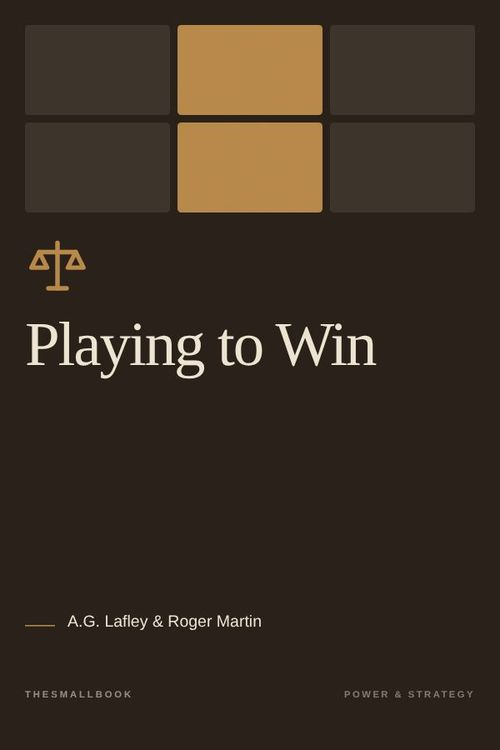

Library › Authors › A.G. Lafley & Roger Martin
Books by A.G. Lafley & Roger Martin
A.G. Lafley & Roger Martin has one book in the library. Every book here is read down to the big idea, the lessons, the lines worth keeping and the actions worth taking. Start with the summary, then buy the full book if it earns a place on your shelf.

Playing to Win
2013 · 8 min · 6 lessons
Strategy is not a plan - it's a set of five choices. Most companies make none of them deliberately.
A.G. Lafley doubled P&G's sales and quintupled its profits using one framework: strategy as a cascade of five choices - winning aspiration, where to play, how to win, capabilities, and management systems. The insight: strategy is not analysis or a document; it is a coherent set of choices about what you will and won't do, made again and again. Companies that refuse to choose lose by default.
Lessons in the summary
- Strategy Is a Choice - Especially What NOT to Do
- The Five Choices: The Strategy Cascade
- Where to Play: Choose the Battleground
- How to Win: Build a Specific Advantage
- Strategy Is a Way of Thinking, Not an Event
- Choose Your Game Before You Try to Win It
Lines worth keeping
- Strategy is choice - and the essence of choice is choosing what not to do.
- Where to play and how to win are the essence of strategy.
- A strategy is a coordinated and integrated set of five choices.
Questions A.G. Lafley & Roger Martin helps answer
Read nearby authors next
- Amish Tripathi 6 books
- Robert Greene 6 books
- Devdutt Pattanaik 5 books
- Nassim Nicholas Taleb 4 books
- Radhakrishnan Pillai 3 books
- Sanjeev Sanyal 3 books
- Simon Sinek 3 books
- Al Ries & Jack Trout 2 books
Questions A.G. Lafley & Roger Martin helps answer
Where should I start with A.G. Lafley & Roger Martin? Start with Playing to Win: Strategy is not a plan - it's a set of five choices. Most companies make none of them deliberately.